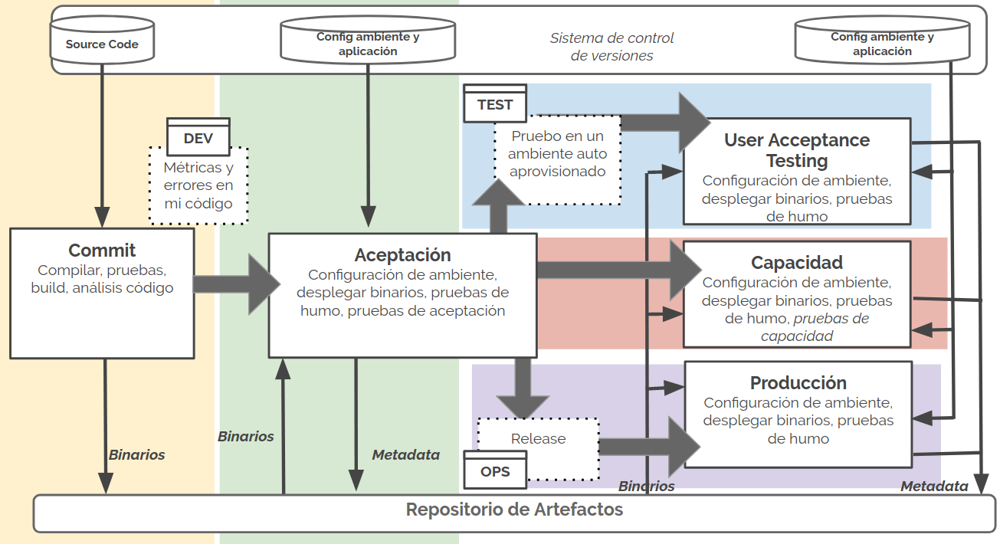
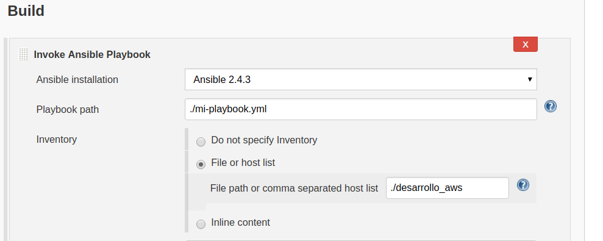

Automatización con Ansible y Jenkins
Presentadores
David Montaño
- Linux fan
- Share Knowledge!
- *New message from David Montaño: We should learn Pony*

Leonardo Quiñonez
- Learn learn learn
- Ops Expertise and hidden Iron Man
- Maybe we have to think about Ops from the beginning
Natalia Parrado
- "But but...can I bash-it?"
- I need another alias
- Kittens!!!
Contenido
De qué hablaremos?
- Continuous Delivery
- Deployment Pipelines
- Jenkins
- Ansible
Continuous Delivery
- Source Code
- Infrastructure as Code
- Configuration Management
- Data as Code
Source Code

Infrastructure as Code
- Ambientes manejados de forma programática
- Procesos de despliegue repetibles
- Menores errores
Configuration Management
- No es suficiente con aprovisionar recursos computacionales de forma repetible.
- Necesitamos versionar cambios que se hacen por ambiente a nivel de configuración y que estos cambios sean los adecuados para nuestras aplicaciones.

Data as Code
Pipelines
Code Pipelines
¿Qué nos permiten?
- Construir, probar y evolucionar sistemas de una forma predecible y controlada
- Recibir una retroalimentación temprana sobre los errores que se puedan introducir en nuestro código
- Pero se enfocan en equipos de desarrollo pricipalmente
Code Pipelines
Esto ya no es suficiente

Code Pipelines
¿Qué sucede después de CI?
- Un porcentaje de pruebas manuales
- Ambientes no controlados y no replicables
- Ambientes que toman mucho tiempo en estar listos
- Ambientes con alcance local muy diferentes a lo que podría ser producción
- Requerimientos no funcionales?
Deployment Pipelines

Jenkins
Plugins
Facilitan integración con varias herramientas
- Desarrollo: gradle, ant, maven
- Integración Contínua: pipelines
- Despliegue Continuo: ssh
Jenkins Pipelines

Interfaz Web Para Scripts
Ansible puede ser configurable por interfaz por ejemplo
Algunos problemas
Versionamiento de lógica
- ¿Cómo deberían manejarse los backups?
- ¿Si tenemos un repositorio con solamente los jobs cómo manejamos la configuración de plugins?
- ¿En qué medida se ve aumentada la complejidad del sistema cuando tenemos un despliegue en clúster?
- Algunos plugins pueden usar bastante memoria RAM
Ansible
Configuration as Code
- Configuración de servidores remotos desde un host central
- SSH y Python
- Definimos playbooks en formato YAML

Inventarios
- Nos permiten definir hosts sobre los que se ejecutan las tareas
- Podemos agrupar esos hosts en grupos
- Estáticos o dinámicos (por ejemplo cuando usamos ansible con servidores en la nube)

Variables
- Declaradas globalmente
- Declaradas por grupo específico
- Declaradas por host
- Declaradas en playbooks

Playbooks, Roles y Tasks
- Los playbooks son archivos .yml
- Un playbook agrupa un conjunto de tareas
- Un playbook define en qué hosts se ejecutan esas tareas
- Las tareas pueden estar agrupadas en roles (reusabilidad)